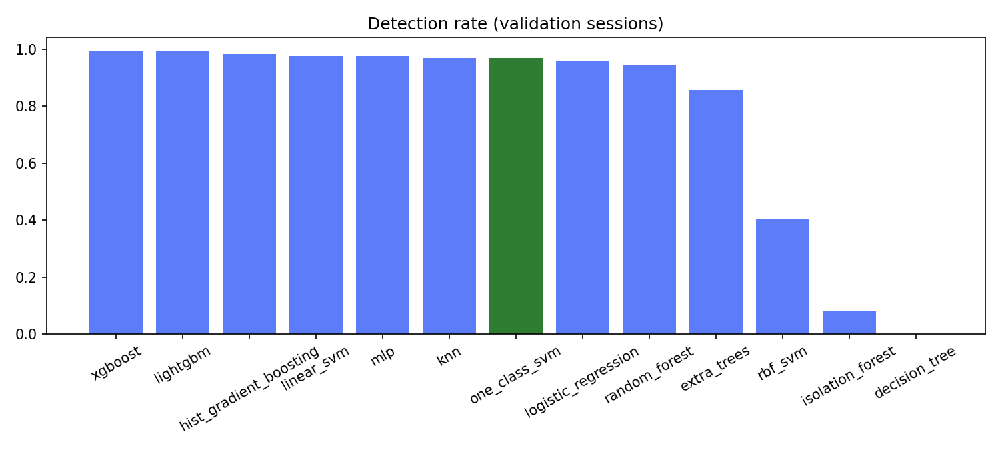
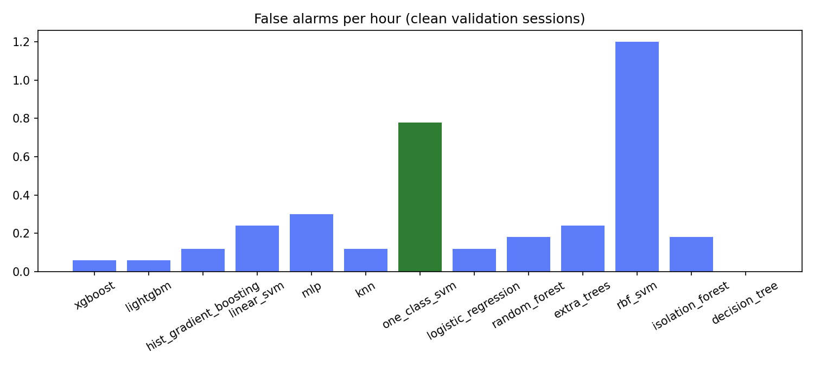
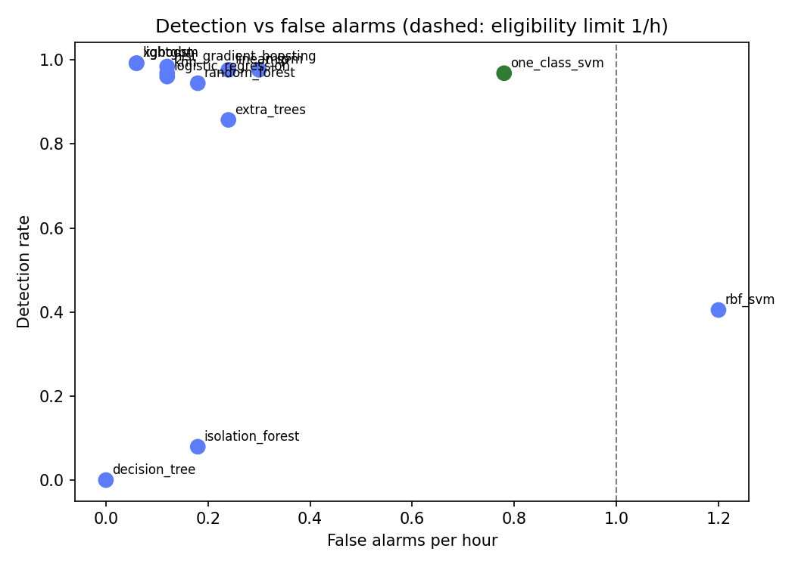

Winner by the rule in MODEL_SELECTION.md section 6: one_class_svm. Simulation only; not a bench or flight result.
| data | datasets/sim_fa2 |
| sessions_train | 2210 |
| sessions_calibration | 884 |
| sessions_validation | 1326 |
| threshold_percentile | 99.900 |
| persistence_k | 10 |
| Model | DR (T1) | FA/h (T2) | DR no C/N0, DOP (T3) | DR weak <1 dB (T4) | DR unseen type (T5) | Delay median s (T6) | ms/decision (T7) | DR mean, 5 seeds (T8) | DR std (T8) | FA/h mean (T8) | FA/h std (T8) | Eligible |
|---|---|---|---|---|---|---|---|---|---|---|---|---|
| xgboost | 0.992 | 0.060 | 0.913 | 1.000 | 0.976 | 1.564 | 0.002 | 0.990 | 0.006 | 0.096 | 0.061 | yes |
| lightgbm | 0.992 | 0.060 | 0.937 | 1.000 | 0.968 | 1.478 | 0.013 | 0.979 | 0.018 | 0.036 | 0.029 | yes |
| hist_gradient_boosting | 0.984 | 0.120 | 0.865 | 0.875 | 0.952 | 1.581 | 0.003 | 0.970 | 0.015 | 0.024 | 0.048 | yes |
| linear_svm | 0.976 | 0.240 | 0.921 | 1.000 | 0.960 | 1.290 | 0.000 | 0.973 | 0.004 | 0.168 | 0.070 | yes |
| mlp | 0.976 | 0.300 | 0.937 | 1.000 | 0.952 | 1.070 | 0.001 | 0.984 | 0.009 | 0.192 | 0.167 | yes |
| knn | 0.968 | 0.120 | 0.944 | 1.000 | 0.929 | 1.676 | 0.031 | 0.951 | 0.015 | 0.120 | 0.186 | yes |
| one_class_svm | 0.968 | 0.780 | 0.929 | 1.000 | 0.968 | 0.993 | 0.041 | 0.971 | 0.004 | 0.912 | 0.110 | yes |
| logistic_regression | 0.960 | 0.120 | 0.929 | 1.000 | 0.960 | 1.234 | 0.000 | 0.965 | 0.006 | 0.144 | 0.061 | yes |
| random_forest | 0.944 | 0.180 | 0.905 | 0.625 | 0.905 | 2.201 | 0.031 | 0.933 | 0.010 | 0.144 | 0.029 | yes |
| extra_trees | 0.857 | 0.240 | 0.810 | 0.125 | 0.865 | 2.295 | 0.030 | 0.878 | 0.014 | 0.300 | 0.137 | yes |
| rbf_svm | 0.405 | 1.200 | 0.952 | 0.375 | 0.333 | 5.885 | 0.065 | 0.379 | 0.020 | 0.708 | 0.462 | no |
| isolation_forest | 0.079 | 0.180 | 0.595 | 0.000 | 0.079 | 1.506 | 0.014 | 0.081 | 0.022 | 0.588 | 0.238 | no |
| decision_tree | 0.000 | 0.000 | 0.937 | 0.000 | 0.246 | n/a | 0.000 | 0.000 | 0.000 | 0.000 | 0.000 | no |


